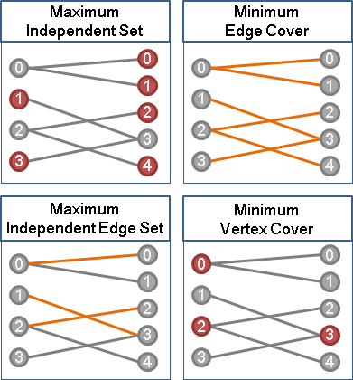

Combinatorics & Graph Theory
Independent set and edge cover
Slightly different terminology:

Theorem. Let $V$ be the set of vertices in a graph $G.$ Then $I$ is an independent set iff $V - I$ is an edge cover.
Corollary. $I$ is a maximal independent set iff $V - I$ is a minimal edge cover.
Vertex basis of a directed graph
Proposition. The vertex basis in a directed graph $G$ is unique if $G$ has no circuit.
Reference
- Applied Combinatorics by Alan Tucker
- Everything else from the web.